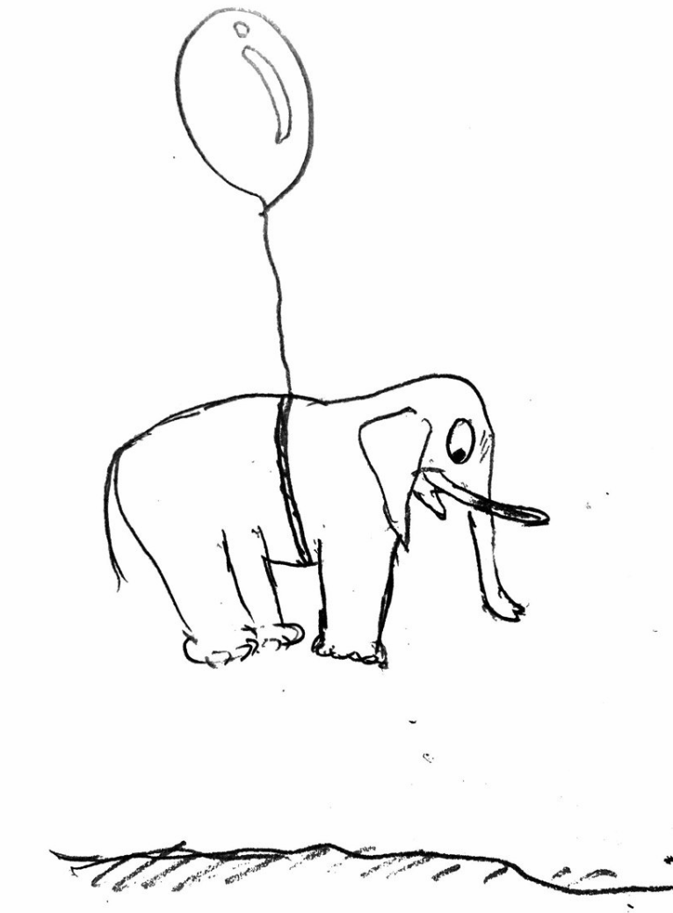

比较 C++ Rust Trait
定义
为了对所有类型的数据结构保持一致的 API，C 用 void*，C++ 用虚函数，这些造成 runtime overhead. C++ 的模板编程，eliminates the need for runtime binding.
https://en.wikipedia.org/wiki/Trait_(computer_programming)：
In computer programming, a trait is a concept used in object-oriented programming, which represents a set of methods that can be used to extend the functionality of a class.
traits 是一种介于 OOP protocol 和 mixin 的东西。OOP protocol 可以通过 method signatures 来定义 behaviors，mixins 包含所有 method definitions, 也可能通过 member variables 携带状态。trait 仅仅是一群方法的集合：provide a set of methods that implement behaviour to a class
Mixin
既然拿 mixin 跟 trait 比较，那么应该了解 mixin 是什么。Javascript 用了 mixin，根据 mozilla 的文档，mixin 是一个类，里面部分方法还没实现，要求其他类去补充这些实现。这篇文档说跟没说一样。继续看维基的 Mixin ，后者强调 "inject" 这一动作，说获取 mixin 的类不必和 mixin 类形成 "is a" 关系，这也是 mixin 和 inheritance 的区别。维基强调 Mixin 是补充功能的一方。
可以假设 mixin 是一个细胞，被另外一个细胞吞噬，里面的状态(DNA) 被移动新的宿主中去，同时宿主实现了它的接口。(外星生物学)
const mixinCell = {
transform_to_cancer_cell() {
console.log("Carcinogenesis");
},
};
class Cell {
constructor(name) {
this.name = name
}
}
function mixin(base, mixin_class) {
Object.assign(base.prototype, mixin_class);
}
mixin(Cell, mixinCell);
const cell = new Cell("Colorectal");
cell.transform_to_cancer_cell();
这段代码描述的是，大肠细胞如何通过吞噬 mixinCell 最后癌变。打开浏览器并 F12，输入代码，结果是 Carcinogenesis
C++ Mixin
上一节提到的 js mixin 平平无奇，现在来看 C++ 的 mixin。
#include "libcxx.h"
#include <string>
using namespace std;
struct NormalCell
{
NormalCell(string n) : name(n) {}
string name;
void divide() { lzlog("cell division", s); }
void die() { lzlog("natural death", s); }
};
template <typename Cell> struct PotentialCancerCell : Cell
{
PotentialCancerCell(const Cell &cell) : Cell(cell) {}
void another_way_of_living()
{
lzlog("the name is", s);
lzlog(Cell::name.c_str(), s);
for (int i = 0; i < 5; ++i)
this->divide();
lzlog("...", s);
lzlog("never dies", s);
}
};
template <typename Cell>
PotentialCancerCell<Cell> let_there_be_cancer(const Cell &cell)
{
return PotentialCancerCell<Cell>(cell);
}
int main()
{
NormalCell cell("Colorectal");
let_there_be_cancer(cell).another_way_of_living();
}
通过 let_there_be_cancer() 制造了一个 PotentialCancerCell 的对象，也就是一个会癌变的细胞，这个细胞无限繁殖：
the name is
Colorectal
cell division
cell division
cell division
cell division
cell division
...
never dies
其中，NormalClass 是 mixin 细胞，PotentialCancerCell 使用了正常细胞的分裂功能。
Rust Trait
Mixin 的关键在于，让某些类有某些行为能力，但又不想修改那些类的定义，因此在它的基础上再加一层，形成一个新的类。
而 trait 纯粹只有方法
trait Ballon {
fn fly(&self);
}
struct Elephan {
}
impl Ballon for Elephan {
fn fly(&self) {
println!("Elephan flys")
}
}
fn main() {
let el = Elephan{};
el.fly();
}

C++ Type Trait
Rust 的 trait 容易理解，但是 C++ trait 完全不同，所以这篇文章的标题首先就错了，根本不能比较。
不存在 C++ trait, 只有 C++ type trait, 甚至不能叫做 trait class, 因此老老实实叫 type trait 就好。
顾名思义，type trait 和 type 有关系，比如 is_void<void>::value 中 is_void 是 type trait. value 是 type trait class 里面的值。
template< typename T >
struct is_void{
static const bool value = false;
};
template<>
struct is_void< void >{
static const bool value = true;
};
写法就是一个泛型，一个 specification，搭配来写。
作用是在 compile time 指导编译器选择正确的编译方向。为什么要选方向呢，因为形式上，所有不同的类，调用同一个接口，如果在 runtime 让 CPU 判断走什么指令，则产生 runtime overhead, 如果在 compile time 就能决定，则能提高性能。
最后以一个开玩笑时候写的代码结尾：
#include "libcxx.h"
struct BraveGay
{
void self_expression() { lzlog("I am gay", s); }
};
struct ShyGay
{
void lie() { lzlog("I am not gay", s); }
};
template <bool b> struct GayDectector
{
template <typename T> static void speak(T &person) { person.lie(); }
};
template <> struct GayDectector<true>
{
template <typename T> static void speak(T &person)
{
person.self_expression();
}
};
template <typename T> struct has_courage_to_express_oneself
{
static const bool value = false;
};
template <> struct has_courage_to_express_oneself<BraveGay>
{
static const bool value = true;
};
template <typename T> void round_table_introduction(T &person)
{
GayDectector<has_courage_to_express_oneself<T>::value>::speak(person);
};
int main()
{
BraveGay at;
ShyGay pz;
round_table_introduction(at);
round_table_introduction(pz);
}
（注：我不是 gay 也不歧视 gay）
其中 has_courage_to_express_oneself 是 type trait。可以看出跟 Rust 的 trait 完全不一样。